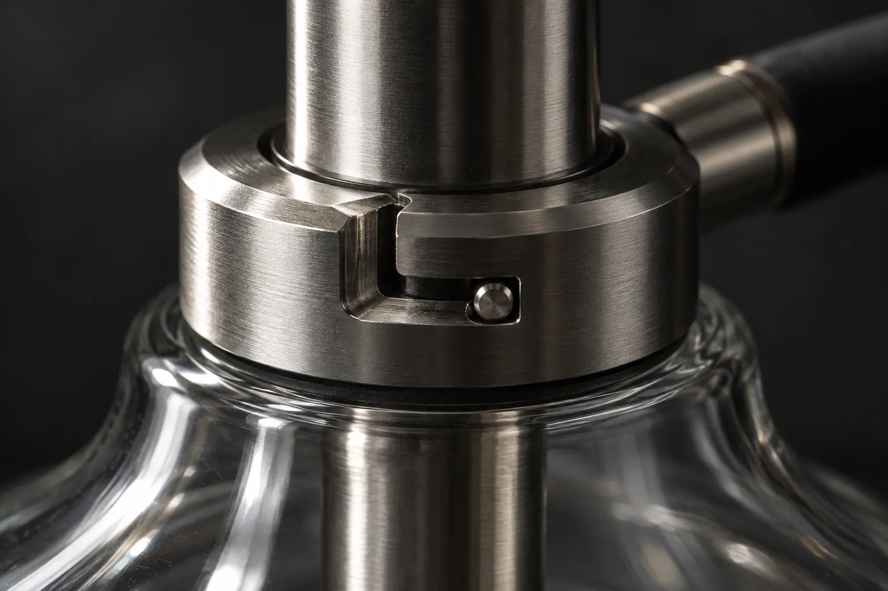
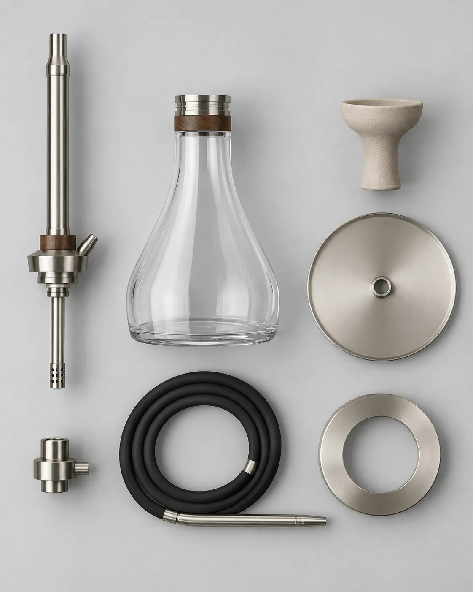

وصلة بايونيت
لا أسنان لولبية بين الجسم والقاعدة ولا بين الجسم والرأس. بايونيت بثلاث قنوات يُقفل بربع دورة. يُركَّب ويُفك بيد واحدة، ويزول خطر تعرية الأسنان.
التصميم والهندسة وضبط الجودة لدى NARION؛ والإنتاج يجري مع شركاء تصنيع معتمدين. السلسلة الأولى في مرحلة التحضير للإنتاج: الملف الفني مكتمل، ومرحلة العيّنات جارية. الأبعاد وقيم الأداء على هذا الموقع هي مواصفتنا الإنتاجية.
«مقاوم للصدم» ليست جملة تسويقية بل نتيجة اختيار المواد. البروتوكول أدناه هو في الأرجيلة ثلاثة أجزاء تنكسر: القارورة والرأس وطرف الخرطوم. استبعدنا الثلاثة جميعاً.

هنا يكمن المنطق التجاري للعائلة. هذه التفاصيل الستة متطابقة في جميع الطُرز؛ والتمايز يقتصر على المقاس والتشطيب.
لا أسنان لولبية بين الجسم والقاعدة ولا بين الجسم والرأس. بايونيت بثلاث قنوات يُقفل بربع دورة. يُركَّب ويُفك بيد واحدة، ويزول خطر تعرية الأسنان.
الجسم وأنبوب الغمر يُشغَّلان كقطعة واحدة. بلا لحام وبلا وصلة لولبية تنتفي نقطة التسريب التقليدية تماماً.
ثمانية ثقوب شعاعية في طرف الأنبوب. تُصغّر حجم الفقاعة فيهبط صوت السحب ومقاومته معاً.
غشاء سيليكون بدل الصمام الكروي، صُمِّم ليعمل بصمت ويقاوم الانسداد ويُفك للغسل. والصمام الكروي تقليدياً أول ما يتعطّل في المقاهي.
تُقاس مقاومة السحب لكل طراز وتُدوَّن في الورقة الفنية. لا ينشر هذا الرقم تقريباً أيٌّ من المنافسين — وهو في الشريحة العليا أرخص وسيلة لبناء ثقة تقنية.
سبع قطع دون أدوات؛ ويُستهدف أن تتحمّل جميع القطع غسالة الصحون.

هدف مقاومة الصدم حدّد وحده مادة القاعدة. جرى تقييم خمسة مرشّحين.
| المادة | مقاومة الصدم | حرارة مستمرة | الشفافية | القرار |
|---|---|---|---|---|
| زجاج بوروسيليكات | هشّ | 400 °C | ممتازة | مستبعَد — هشّ |
| كوبوليستر Tritan | عالية جداً | ~100 °C | كالزجاج | مختار |
| بولي كربونات (PC) | عالية جداً | ~115 °C | جيدة | مستبعَد — انطباع BPA |
| SAN / أكريليك | منخفضة | ~80 °C | جيدة | مستبعَد — يتشقّق ويُخدش |
| فولاذ 304 | عالية جداً | 800 °C | لا توجد | احتياطي — الماء غير مرئي |
قيم الحرارة المستمرة نطاقات تقريبية لعائلة المادة؛ وستُثبَّت وفق ورقة البيانات الفنية للمورّد النهائي.
الخيار المعقول الوحيد الذي يجمع صفاء الزجاج ومقاومة الصدم. خالٍ من BPA، يتحمّل دورات 70 درجة مئوية في غسالة الصحون، ويأتي بشهادات التلامس الغذائي. خطره المعروف الوحيد احتباس النكهة: لن يبدأ الإنتاج التسلسلي قبل إجراء لوحة شمّ عمياء بعد خمسين دورة غسل.
| القطعة | الحل التقليدي | حل NARION | المكسب |
|---|---|---|---|
| الرأس — مقهى / منزل | طين، خزف فوسفاتي | خزف كورديريت تقني، جدار 5 مم | مقاومة عالية للصدمة الحرارية، لا يتشقّق عند السقوط |
| الرأس — سفر | طين | سيليكون LSR عالي الحرارة | مرن؛ يتشوّه عند الصدم بدل أن ينكسر |
| الخرطوم | جلد، لفّ قماشي | سيليكون معالَج بالبلاتين، تجويف Ø12 مم | قابل للغسل، لا يحتبس الرائحة |
| طرف الخرطوم | جبس، راتنج | جسم ألومنيوم مُشغَّل + بسطم سيليكون | يتحمّل السقوط، والبسطم قابل للاستبدال |
| الإحكام | سدادة مطاطية | حلقة FKM، 70 شور A، مقطع Ø2,5 مم | لا تتقادم، درجة تلامس غذائي، بديل رخيص |
لا دهان ولا كروم. في حرّ الخليج صيفاً ينتفخ الدهان ويتقشّر الكروم. أما PVD (TiN / ZrN) فلا يُخدش ولا يبهت تحت الأشعة فوق البنفسجية. هذا قرار متانة لا قرار جمال — وسمك الطلاء سيُقاس في كل دفعة.
تسعة تشطيبات موزّعة على ثلاثة طُرز. المنتج الواحد يحمل ثلاثة على الأكثر: معدن، طلاء، مادة دافئة. والرابع يُفسد إحساس الشريحة العليا.